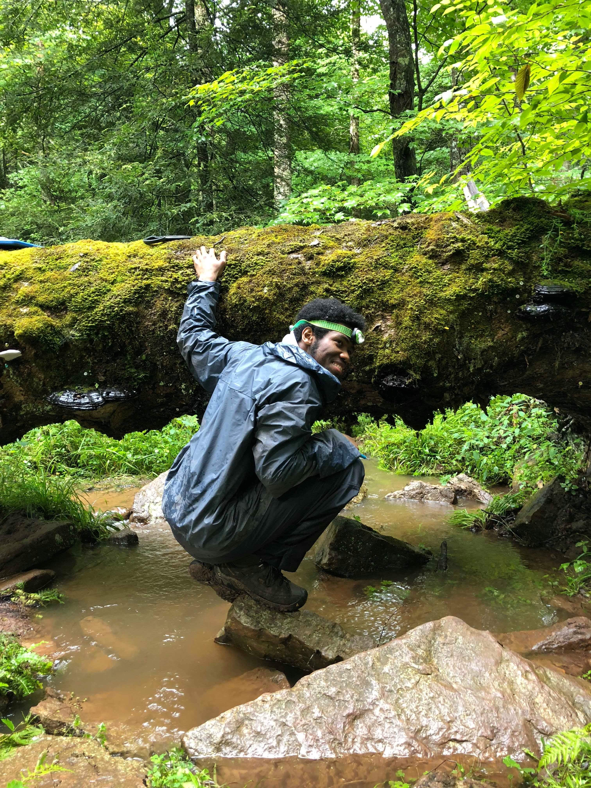

Welcome to my project website!
This is where I post my projects in their entirety. These projects are formatted so that readers are 1)taken through my data science thinking process
and 2)provided with all of the technical tools I use for these projects.
For a more detailed summary of the projects please visit my GitHub page.
For more information about my skill set please visit my personal website.